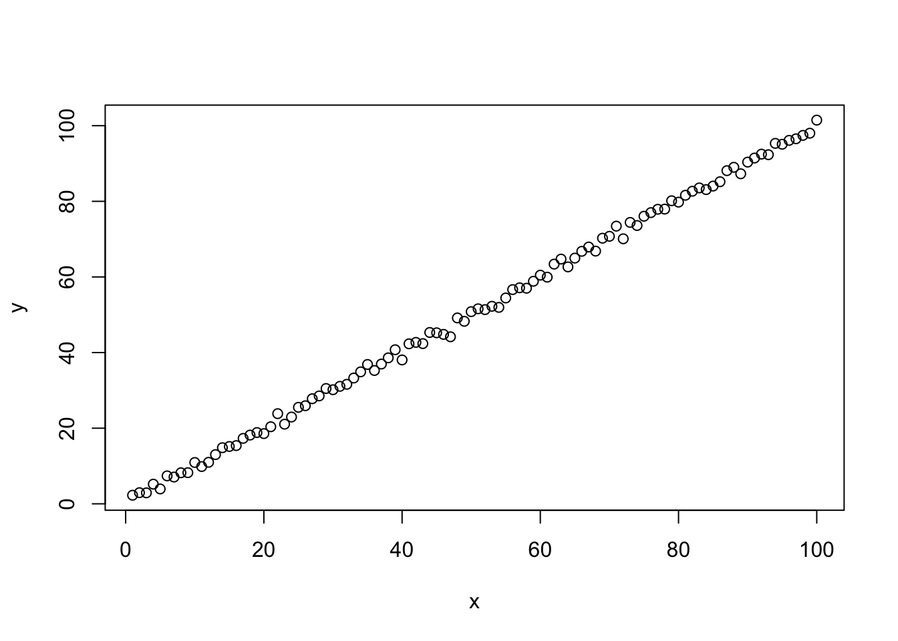

source method
source(here("R/example.R"))

# source(here("R/example2.R")) print(head(data.frame(x,y))) #> x y #> 1 1 2.270260 #> 2 2 2.949769 #> 3 3 2.900507 #> 4 4 5.195690 #> 5 5 3.929142 #> 6 6 7.390877